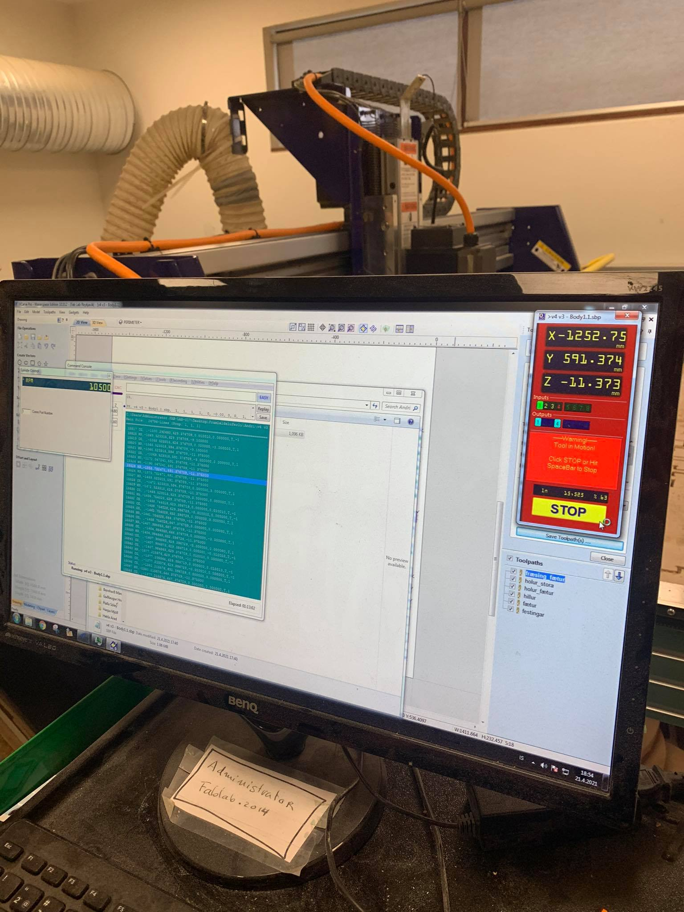
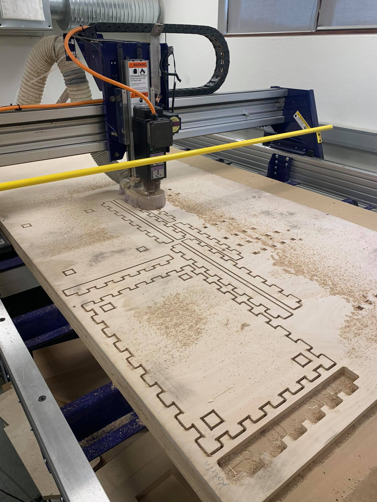

My contribution to part 1 of the final project
Introduction
This project is a part of VÉL403G, a course at the University of Iceland, spring semester 2021. The course is tought by Hafliði Ásgeirsson.
The group
Members of the group are Andri Dagur Ófeigsson, Björg Eva Steinþórsdóttir og Guðrún Karitas Blomsterberg.The project
The first part of the final project is to design something big and mill it with ShopBot in FabLab Reykjavík.
Table 1: My contribution
| Project part | Working time [hours] |
|---|---|
| Finding inspiration | 3 |
| Handing out projects | 0,3 |
| Design | 3 |
| Milling with ShopBot | 3 |
| Constructing the table | 3 |
| Documentation | 6 |
| Website programming | 3 |
| Total workload | 21,3 |
Finding inspiration
The group decided to design and mill some piece of furniture. Inspiration was found on Icelandic design store's websites, and the conclusion was to make a sidetable, similar to the one shown in the picture below, by Norman Copenhagen.

Searchwords used: fablab furniture, diy furniture, side table, vagn húsgögn, sófaborð..
Designing the sidetable
The first step of the design was planning the measurements, seen below in table 2.
Table 2: Measurement planning
| Height | 70 cm |
| Width | 40 cm |
| Length | 60 cm |
| Height of shelve's edges | 5 cm |
| Material thickness | 1,8 cm |
| Leg thickness | 2*1,8 cm |
Below is a listing of the parameters set up in Fusion360.

The group decided, in consultation with the course teacher, to make the table legs with two material thicknesses, for stability. The design was also made in a way that no glue, nails or screws are needed for construction.
Below are images of how the group imagined the mounting components, to make the legs stick together and holding up the shelves.


A part of the time assigned to designing was used for following along while Guðrún was drawing in Fusion360, to help with any difficulties that came up.
The final product, after drawing, can be seen below, but putting the already-drawn parts together to show the final product, was my responsibility.

After Andri prepared the parts for milling with VCarve, according to the video below, him and I went to FabLab and executed the milling process.
Milling
Before milling any project it is important to read through the manual for the ShopBot, seen in Icelandic if button below is clicked.
The most important part is insuring that all safety measures are enforced. Those include:
- Putting on safety goggles
- Putting on hearing protectors
- Tying up hair and other loose items that could get tangled in machinery
- Wearing closed top shoes
- Familiarize with the emergency stop functions
Other things to consider before milling:
- Turn on vacuum
- Fasten the wood to prevent fire or other accidents
- Heat up the mill
- Make sure the ShopBot will be supervised the whole milling time
- Leave the mill inn a safe and clean manner after milling
The vacuum that's connected to the mill can be seen below.

After placing the wood on the ShopBot, and checking off everything on the list, the mill's x-, y- and z-axis need to be zeroed. The mill is moved to the corner of the wood with the control board and the position saved as the zero-point og x- and y-axis. A tool is then placed under the mill to zero the z-axis. Below is an image showing the control board, while the mill is in use.
Finally the milling is started, the process took about 2,5 hours and was very successful. After milling the residue sawdust is cleaned by hand.
Constructing the sidetable
Before constructing the table, the components had to be sanded. We soon realized that some errors had been made while drawing and the nail mounts did not fit the holes on the legs, and the finger joints were rather tight. The solution was to saw off a bit of the finger joints and to skip the use of the nail mounts, as the leg-holes on the shelves were tight enought for the shelves to stay in place without them.

The components were put together with a hammer, as some force was needed to make them fit.

The construction came together in the end, and the end result was great!

Here the Final Project page can be accessed and there the whole process is listed, for those interested.
Documentation and website programming
My main responsibility was to document the process of the project and putting it up on the Final Project site. My goal was to make the website organized and accessible for those who visit. Documenting all the parts of the project required following along the other group members' work and was quite time consuming, but gave me a better insight to all parts of the project which is always good.
The site for the Final Project is set up as a tab on my website, and how it was made is shown in detail in Project 1 - Making a website. A new *.html file was saved in the repository folder and every time a change was implemented the website was updated as follows.
In the terminal for the local repository type in: $ git add .
Followed by: $ git commit -m 'a describing word of the last change'
Where the ' ' is neccesary.
Next type: $ git push
And the change is visible on the page in a few moments!
Each design file was exported and added to the repository file of my website, as well as the video and the leaflet for the project. It is then made accessible with a button, like the files below, a link or with direct visibility on the website like the video. A useful page for all of this, called w3schools (which I used as a guide), can be visited by clicking here.
Files
This project as a whole was very educational and interesting and I hope the result shows that! Below is the introduction of the project as a whole, in Icelandic, in the form of a video and a leaflet.